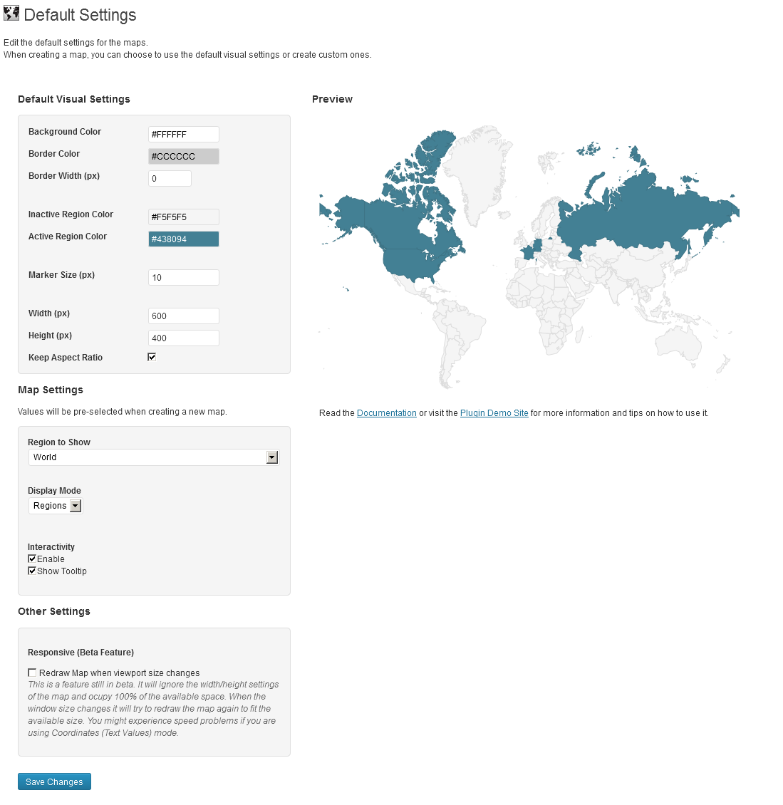
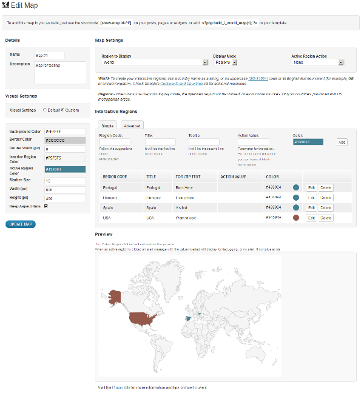
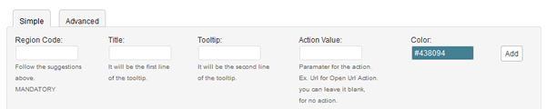

Create Interactive Maps and place them anywhere on your website.
Installing Interactive World Maps is as simple as installing any other Wordpress Plugin:
You will be able to show hundreds of different kinds of maps, including:
You can add active colored regions to the map, and display them in 2 different ways:
You can add interactivity to the active regions:
You will be able to customize the visual of your maps:
This plugin uses the powerful Google Geochart API.
This is the plugin's Default Settings page

These are the settings that the plugin will load, when you choose the map to have the default settings.
They are the following:
VISUAL SETTINGS
Background Color: The background color for the main area of the chart. Can be either a simple HTML color string, for example: 'red' or '#00cc00'. Tip: you can set it to transparent so it doesen't have any solid background color;
Border Color: The color of the map border, as an HTML color string.
Border Width: The border width, in pixels. Tip: you can set it to 0 to display no border.
Inactive Region Color: Colors to assign to regions with no associated data. Tip: you can set it to transparent so it doesen't have any solid background color;
Marker Size (px): Number in pixels for the size of the bubbles, when the Markers display mode is chosen.
Width (px): Width of the visualization, in pixels. Will be the default, unless the height option is specified and keepAspectRatio is set to true - in which case the width is calculated accordingly.
Height (px): Height of the visualization, in pixels. Will be the default, unless the width option is specified and keepAspectRatio is set to true - in which case the height is calculated accordingly.
Keep Aspect Ratio: If true, the map will be drawn at the largest size that can fit inside the chart area at its natural aspect ratio. If false, the map will be stretched to the exact size of the chart as specified by the width and height options.
MAP SETTINGS
Region to Show: The area to display on the map. (Surrounding areas will be displayed as well.) Can be one of the following:
This default setting works only to have one of these options selected by default when you are creating a new map. It will not prevail over a different option you might have chosen when creating a map, even if you choose to display the default visual settings.
Display Mode: Which type of map this is. The data entered for areas to active must match the value specified. The following values are supported:
This default setting works only to have one of these options selected by default when you are creating a new map. It will not prevail over a different option you might have chosen when creating a map, even if you choose to display the default visual settings.
OTHER SETTINGS
Responsive (Beta Feature) - This is a feature still in beta. It will ignore the width/height settings of the map and ocupy 100% of the available space. When the window size changes it will try to redraw the map again to fit the available size. You might experience speed problems if you are using Coordinates (Text Values) mode.
THE PREVIEW
The Default Settings Page also has a preview map, so you can have an idea on how your maps will look like when using the default settings. It is loaded with some default data just for display only, this data will not take part of your maps.
This is the main screen when adding or editing maps:

DETAILS
Name: Name for the map. It will be a reference to you when you manage the maps. It will not be displayed with the map.
Description: It will show when you are managing the maps. It's only a reference to you, it will not be displayed with the map.
VISUAL SETTINGS
This are the settings that will define how your map will look like. You can choose to use custom settings, or use the defaults. Please refer to the Default Settings menu of the documentation for further information about the option fields.
MAP SETTINGS
Settings to define how your map will display and what kind of interactivity it will have. When chosing an option, a description of it will display. You will need to follow the tips on the description to know wich kind of Information you will have to place in the Interactive Regions entries. You have to be aware that different combinations of displayed regions, will need different kinds of data entry. For example, if you choose to display the region 'world' in 'regions' display mode, and if you insert Address text, it will not work, you will need to change the display mode to markers. If you want to color a continent or subcontinent, you will need to choose the proper region to display, and enter the corresponding data that will show up in the supporting information.
INTERACTIVE REGIONS
This is where you will insert the data to display. You can insert it one by one, or use the advanced interface to include a CSV text with the data. Follow the instructions displayed when doing so.

Data you will need to insert:
Region Code: This is the only mandatory field. Depending on your display mode and region to display, the Region Code needed will be different. Information on wich codes or data to insert will display according to your choices.
Title: It will be the line of the tooltip. You can use the name of the Region for example. This was added, to ensure the value is human readable when you have to use ISO codes.
Tooltip: Second line of the tooltip. Complementary Information. Not mandatory.
Action Value: If you chose an action this is the field where you will have to put the value associated with it. For example, if you chose the 'Open URL' action, you will need to insert here the URL you want to open. If you choose 'Alert Message', you should insert the message here.
Color: color for the active region.
IMPORTANT: REMEMBER TO CLICK 'UPDATE' OR 'CREATE MAP' AFTER FINISHING FILLING OUT THE FORMS.
There are 2 ways to display the maps:
Can I display multiple maps per page?
Yes you can.
How do maps display and function in a responsive website?
The maps are partially responsive. If no width is specified it will load with the maximum width available in the container div. For example, it will load and adapt with different sizes for phones/ipads/laptops. However, after loaded it will not change size if you resize the window. Since version 1.4 the plugin includes a beta responsive feature. You can go on Default Settings > Other Settings > Responsive Feature. This is a feature still in beta. It will ignore the width/height settings of the map and ocupy 100% of the available space. When the window size changes it will try to redraw the map again to fit the available size. You might experience speed problems if you are using Coordinates (Text Values) mode.
The markers load to slow. Anyway I can make them load faster?
If you're building a map with more than 10 markers, we recomend you to use the Markers - Coordinates mode, since it will save a lot of time, since it doesn't need to convert the text string in coordinates.
Check out some working maps created with this plugin at : http://cmoreira.net/interactive-world-maps-demo